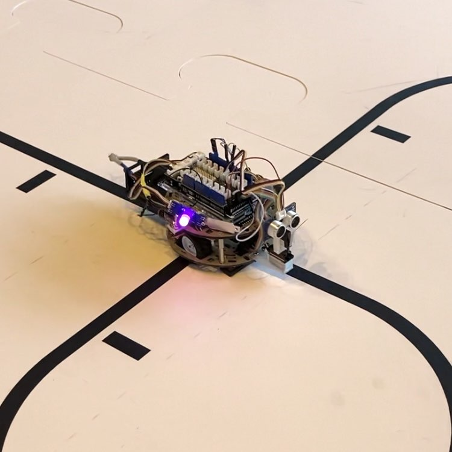

Bouton de micro-onde
Le projet vise à recréer les boutons cassés d'un micro-ondes grâce à l'impression 3D. Un modèle précis a été conçu pour assurer compatibilité et durabilité. Cette solution est économique et adaptée aux besoins du client.

Reacteur ARK
le projet vise à améliorer un modèle trouvé sur internet pour mieux l'integrer dans mon environement domotique

Pied de meuble
Ce projet a pour but de mettre deux meubles a la même hauteur

Robot suiveur de ligne
Ce projet avait pour but de fabriquer un robot suiveur de ligne pour ensuite le faire participer a un concours

Casier camping car
Un client m'a demandé de concevoir et imprimer un casier pour son camping car

Box domotique
je vous montre comment et pourquoi j'ai fabriqué ma propre box domotique